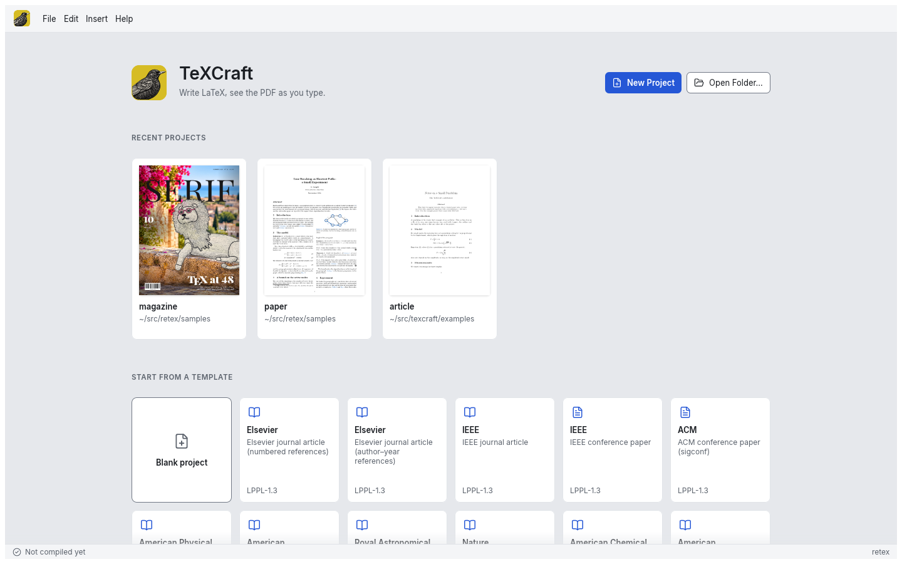
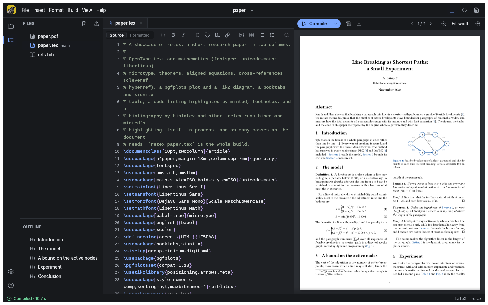

Getting started
Make a project, type, and watch the PDF follow. This page walks through the start page and each part of the window.
The start page
TeXCraft opens on its start page. From there:
- New Project opens the template gallery (below).
- Open Folder… opens a folder that holds a LaTeX project. Desktop only
- Open from GitLab or GitHub… opens a project straight from a repository; see GitLab and GitHub.
- Tip of the day shows one tip about a feature that is easy to miss, a different one each day. Previous Tip and Next Tip show others, and a tip's own button does what it describes (opens Settings, or the guide's page about it). Untick Show tips at startup to hide it; Settings › Appearance turns it on again.
- Recent projects shows the projects you opened, each with the first page of its last PDF. In the browser this is Projects in this browser, with a Delete button for each. Before your first project it says what to do first, with Try an Example.
- Start from a template lists the templates as cards, after Blank project and Example project.
The example project
Try an Example (or Help › Open the Example Project…) makes a short paper of ours into a project you can change and build: sections in two files, a list, a table, a figure drawn with TikZ, numbered equations, cross-references and a citation from a small bibliography. On the desktop TeXCraft asks for a new or empty folder to copy it to; in the browser it is kept under the name Example paper, which you can change. It needs no download.
You can also drop a folder or a zip file on the start page: a folder opens as a project, and a zip becomes a new project (see Adding files). The start page comes back with the app mark at the top left (Start Page).

Templates
The gallery (New Project, or File › New Project from Template…) has a search field and three kinds of starting point:
- Blank project: one empty document.
- TeXCraft's own templates: an article, a thesis with a chapter per file, presentation slides (beamer, 16:9), a letter, a one-page CV and a homework sheet. They are built in, so they work offline and in the browser.
- Publishers' templates: journal and conference classes from Elsevier, IEEE, ACM, APS, AAS, MNRAS, Nature, ACS, APA and ASME, two CV classes (moderncv, Europass) and a scientific poster (tikzposter). On the desktop, one is downloaded from TeX Live the first time you use it, checked against TeX Live's signed package database, and kept for offline use; in the browser it comes from TeXCraft's own site.
Each card shows the template's title, what it is for, who it is from (Built in for TeXCraft's own), its licence in words, such as Free to use (LPPL) (hover for the licence's exact name), and whether it is Ready offline or Downloads when used. Choose a card to see where the template comes from, then Create Project…. On the desktop TeXCraft asks for a new or empty folder; in the browser, for a name.
The window

From left to right:
- The top bar
- The menus File, Edit, Insert and Help; the project's name in the middle (click it to rename the project) with the project menu beside it (open recent, save, save as, save the PDF); and the layout switch: Editor and PDF, Editor Only or PDF Only. On macOS the menus are in the system's menu bar.
- The rail
- A column of buttons that open the side panel's sections: Project Files, Outline, Search, History, Review and Ask AI. Click the open one again to hide the panel. At the bottom, two buttons that open dialogs: Settings and Keyboard Shortcuts.
- The side panel
- The project's files as a tree (the main document is marked), the outline of the file shown (click a heading to go there), project-wide search, the history, the comments, or the AI's answers.
- The editor
- Tabs for the open files, a toolbar with the Source / Formatted switch, the Suggest switch and buttons for the usual markup, and the text itself. Comments sit in a margin on its right. See Writing.
- The PDF pane
- The Compile button and its menu, Build log, Export, the pages and the zoom. The build log replaces the PDF while it is shown; Back to PDF returns. See Building and exporting.
- The status bar
- The caret's line and column, the Vim mode when it is on, what the build is doing, and messages from the last action.
With your first project, a strip above the editor and the PDF says where to start: the Formatted view, the Build log and Help › User Guide (F1). Dismiss hides it for good; Help › First Steps shows it again.
Drag the borders between the panes to resize them. Focus Mode (Ctrl+Shift+Enter) hides the menus, the rail and the side panel; Escape leaves it.
On a phone or in a narrow window
Below a certain width the window rearranges itself: the side panel becomes a drawer that the rail opens over the text, the editor and the PDF become two tabs (Source and PDF, the PDF's tab showing the build's state), and the menus are gathered under one Menu button. Widening the window brings the usual layout back.
Dialogs fill the screen there: Close is at the top left, beside the dialog's title, the content scrolls, and the dialog's buttons (Open, Create Project…, Cancel) stay in a bar along the bottom. Settings lists its sections; tap one to open it, and Back returns to the list. The template gallery shows its categories as a drop-down above one column of cards. The status bar keeps only the build's state.
Not yet: this layout has not been tried on real phones; reports are welcome.
Your first build
- Make a project from the Article template.
- Type a sentence in the editor. When you pause, a build starts: the Compile button turns to Compiling…, the status bar shows the page being built, and the PDF updates, keeping its place.
- Double-click a word in the PDF: the editor jumps to the line that wrote it.
- Save with Ctrl+S. On the desktop a project that is not saved yet asks for a folder; in the browser, for a name.
While a build runs several passes, the PDF of the pass before is shown, marked as a draft; its references can show as "??" until the last pass ends.
Automatic builds
TeXCraft compiles when typing pauses, and once when a project opens. While it does, the button reads Auto-Compile; clicking it still compiles at once. To compile only when you ask, untick Compile automatically in the button's menu (or in Settings › Building, which also sets how long the pause is). Then use Compile or Ctrl+Enter.